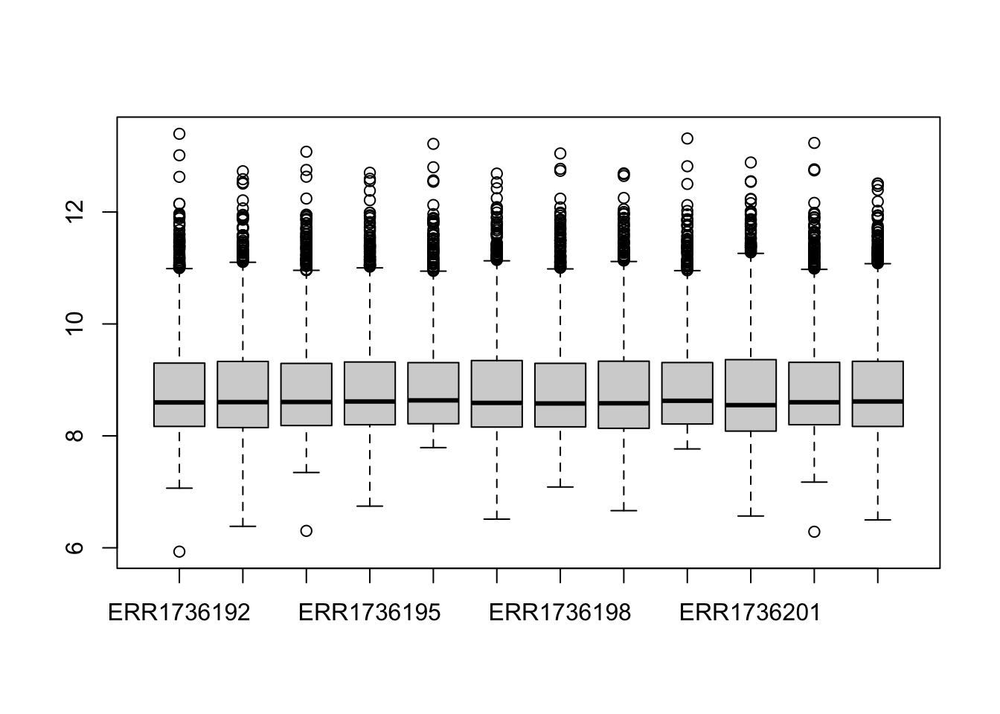
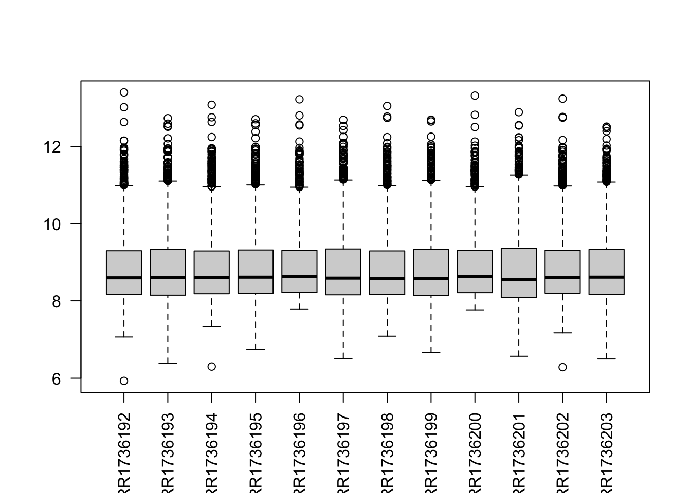
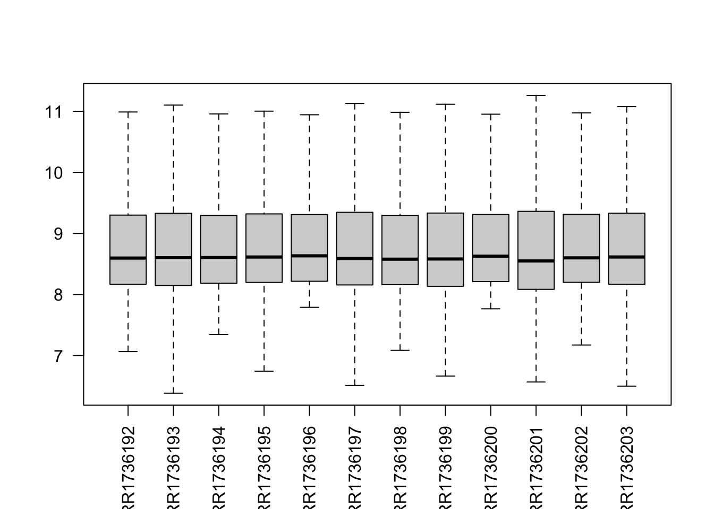
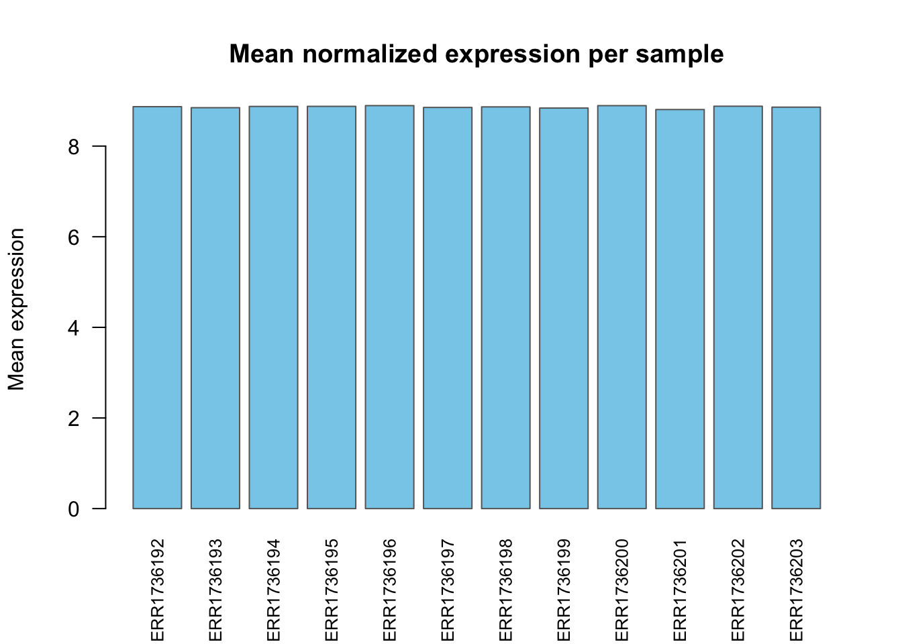
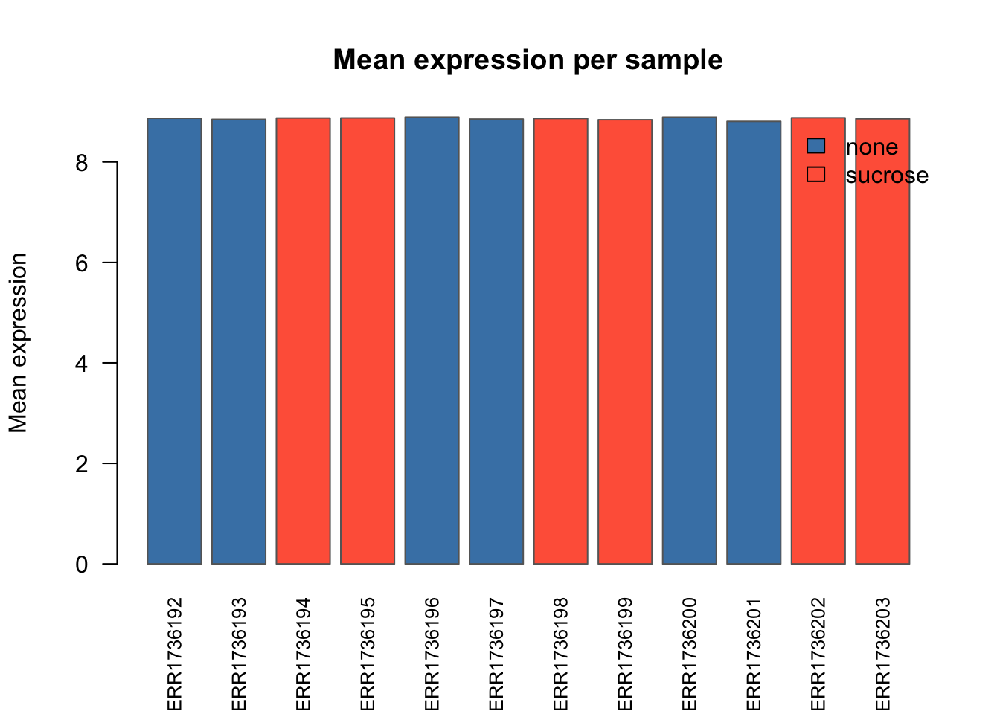
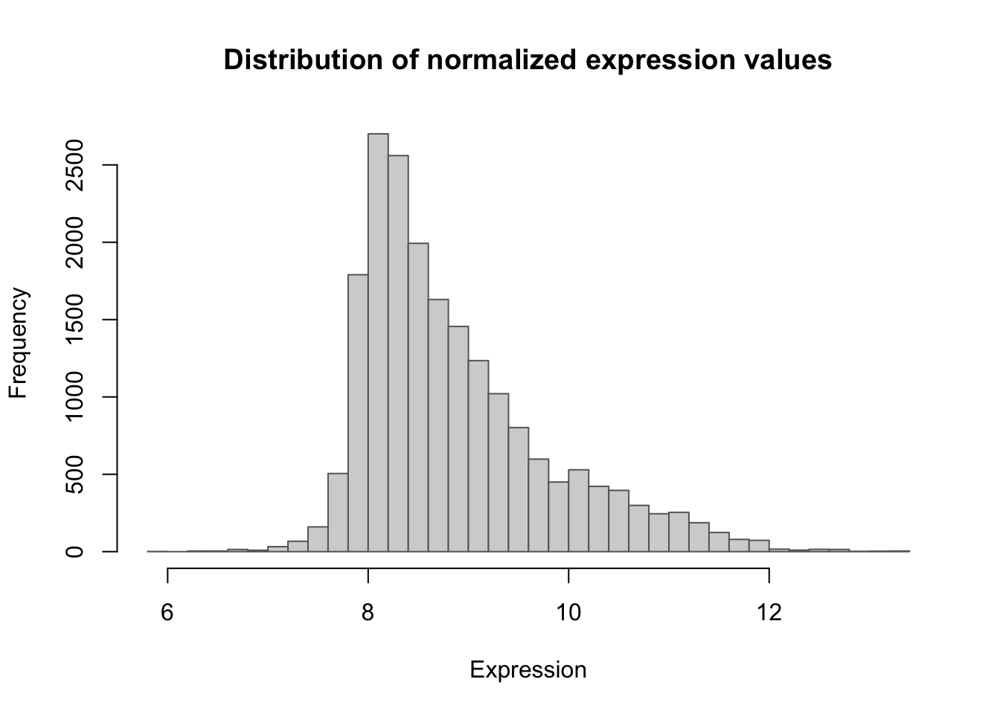
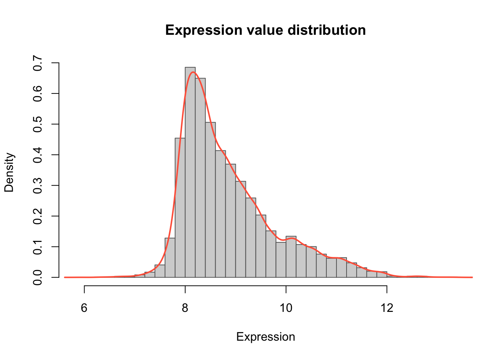
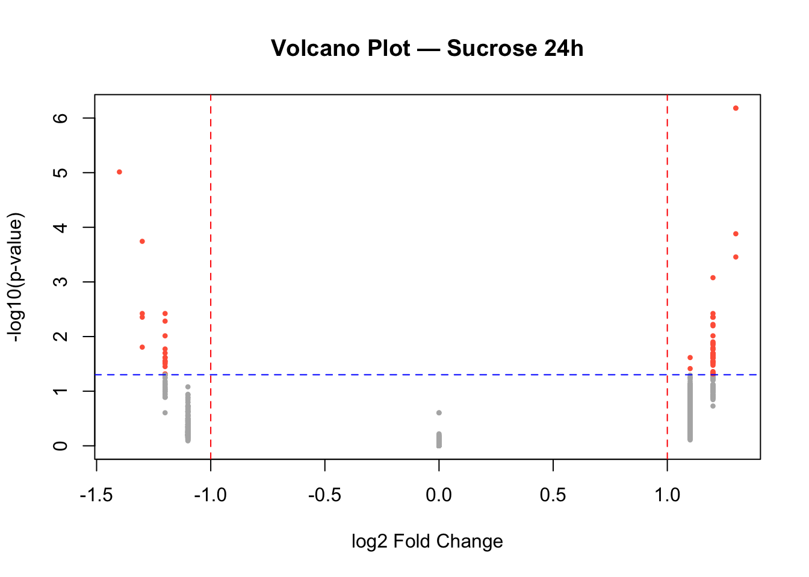
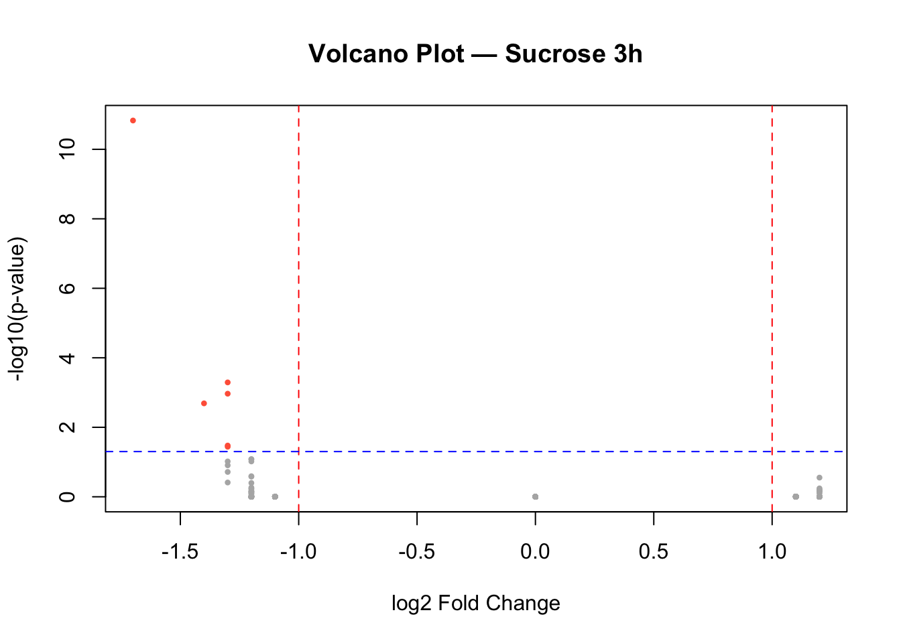
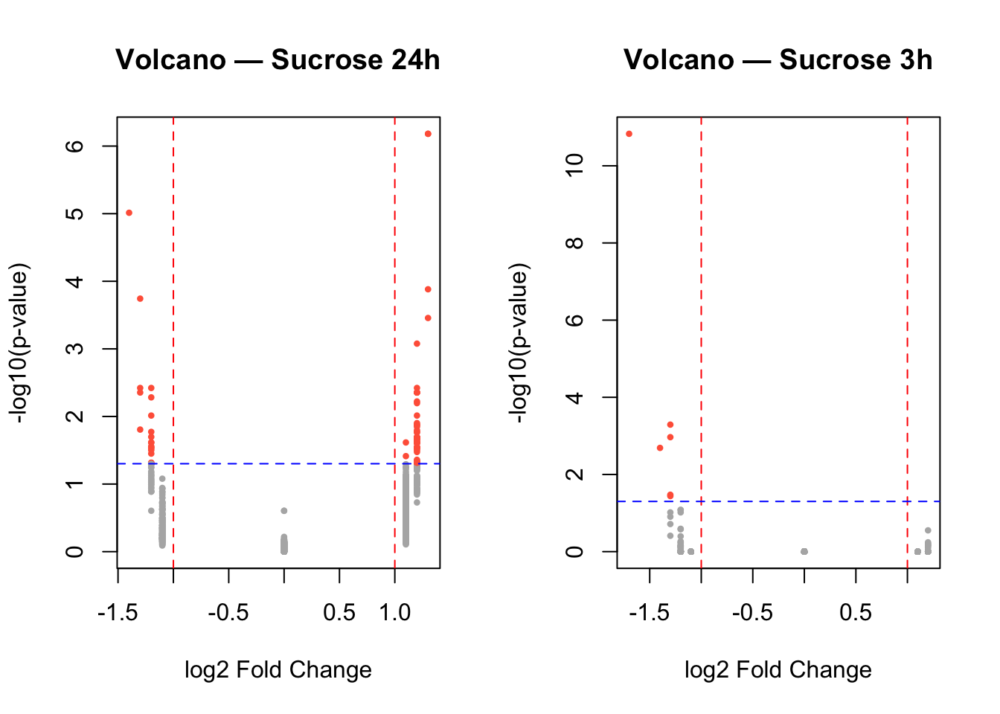

data <- readRDS(gzcon(url(
"https://raw.githubusercontent.com/urppeia/publication_figs/main/data.rds"
)))Exercise - Block 1
Data for the course
str(data)List of 3
$ counts:'data.frame': 1642 obs. of 13 variables:
..$ Gene_ID : chr [1:1642] "AT1G01090" "AT1G01100" "AT1G01300" "AT1G01320" ...
..$ ERR1736192: num [1:1642] 8.95 10.71 8.26 10.47 9.6 ...
..$ ERR1736193: num [1:1642] 8.75 11.05 8.62 9.85 9.74 ...
..$ ERR1736194: num [1:1642] 8.94 10.76 8.32 10.55 9.43 ...
..$ ERR1736195: num [1:1642] 8.8 10.93 8.52 10.17 9.66 ...
..$ ERR1736196: num [1:1642] 8.88 10.59 8.35 10.64 9.49 ...
..$ ERR1736197: num [1:1642] 8.78 11.02 8.49 9.91 9.76 ...
..$ ERR1736198: num [1:1642] 8.92 10.72 8.33 10.46 9.5 ...
..$ ERR1736199: num [1:1642] 8.92 11 8.73 9.84 9.85 ...
..$ ERR1736200: num [1:1642] 8.86 10.7 8.25 10.54 9.48 ...
..$ ERR1736201: num [1:1642] 8.88 11.04 8.44 9.75 9.78 ...
..$ ERR1736202: num [1:1642] 8.93 10.6 8.32 10.63 9.43 ...
..$ ERR1736203: num [1:1642] 8.81 10.99 8.34 10 9.61 ...
$ diff :'data.frame': 1642 obs. of 6 variables:
..$ Gene_ID : chr [1:1642] "AT1G01090" "AT1G01100" "AT1G01300" "AT1G01320" ...
..$ Gene_name : chr [1:1642] "PDH-E1 ALPHA" "RPP1A" "APF2" "" ...
..$ sucrose_24h_pval: num [1:1642] 0.591 0.569 0.565 0.743 0.884 ...
..$ sucrose_24h_lfc : num [1:1642] 1.1 1.1 1.1 0 0 0 0 1.1 0 1.1 ...
..$ sucrose_3h_pval : num [1:1642] 0.998 0.998 0.998 0.998 0.998 ...
..$ sucrose_3h_lfc : num [1:1642] 0 -1.1 0 1.1 -1.1 0 1.1 0 0 1.1 ...
$ anno :'data.frame': 12 obs. of 4 variables:
..$ Sample_ID: chr [1:12] "ERR1736192" "ERR1736193" "ERR1736194" "ERR1736195" ...
..$ compound : chr [1:12] "none" "none" "sucrose" "sucrose" ...
..$ dose : chr [1:12] "none" "none" "15 millimolar" "15 millimolar" ...
..$ time : chr [1:12] "24 hour" "3 hour" "24 hour" "3 hour" ...data$anno Sample_ID compound dose time
1 ERR1736192 none none 24 hour
2 ERR1736193 none none 3 hour
3 ERR1736194 sucrose 15 millimolar 24 hour
4 ERR1736195 sucrose 15 millimolar 3 hour
5 ERR1736196 none none 24 hour
6 ERR1736197 none none 3 hour
7 ERR1736198 sucrose 15 millimolar 24 hour
8 ERR1736199 sucrose 15 millimolar 3 hour
9 ERR1736200 none none 24 hour
10 ERR1736201 none none 3 hour
11 ERR1736202 sucrose 15 millimolar 24 hour
12 ERR1736203 sucrose 15 millimolar 3 hourOverview of the Dataset
This RNA-seq dataset (GEO: GSE102374, SRA: PRJNA397585) comes from the tomato plant (Solanum lycopersicum). The experiment investigates how sucrose treatment affects gene expression in tomato over time. Each sequencing run (ERR1736192–ERR1736203) corresponds to one biological replicate under a specific treatment and timepoint.
Biological Context
Sucrose is not only a carbon source but also acts as a signaling molecule in plants, influencing growth, metabolism, and stress responses. By comparing gene expression profiles after sucrose exposure at 3 h and 24 h, the study aims to identify genes involved in early sugar signaling and longer-term metabolic regulation in tomato.
Experimental Design
| Condition | Compound | Dose | Timepoint | Replicates (ERR IDs) |
|---|---|---|---|---|
| Control | none | none | 3 h | ERR1736193, ERR1736197, ERR1736201 |
| Control | none | none | 24 h | ERR1736192, ERR1736196, ERR1736200 |
| Sucrose-treated | sucrose | 15 mM | 3 h | ERR1736195, ERR1736199, ERR1736203 |
| Sucrose-treated | sucrose | 15 mM | 24 h | ERR1736194, ERR1736198, ERR1736202 |
- Total samples: 12
- Design: 2 × 2 factorial (Treatment × Time)
- Replicates: 3 per condition
Experimental Aim
To characterize transcriptional changes in tomato induced by sucrose at early (3 h) and later (24 h) timepoints, revealing genes and pathways regulated by sugar signaling.
Summary
This is a plant RNA-seq time-course experiment from Solanum lycopersicum, testing sucrose signaling effects. It illustrates a balanced factorial design, ideal for learning how to:
- Interpret replicates and contrasts,
- Model treatment × time interactions
- Perform biological interpretation
Exploratory data analysis
Check the number of samples and genes in these data
head(data$counts) Gene_ID ERR1736192 ERR1736193 ERR1736194 ERR1736195 ERR1736196 ERR1736197
1 AT1G01090 8.951818 8.745436 8.936055 8.796355 8.881562 8.783848
2 AT1G01100 10.714686 11.049205 10.760942 10.925465 10.586018 11.018331
3 AT1G01300 8.262611 8.621839 8.317833 8.524731 8.351529 8.490846
4 AT1G01320 10.474282 9.846080 10.547565 10.166405 10.638864 9.910971
5 AT1G01620 9.602057 9.741940 9.433688 9.660392 9.487521 9.759061
6 AT1G01960 7.992299 8.164980 7.940793 8.188539 8.066384 8.091465
ERR1736198 ERR1736199 ERR1736200 ERR1736201 ERR1736202 ERR1736203
1 8.918614 8.917665 8.859714 8.880689 8.925662 8.810786
2 10.720866 11.003460 10.697236 11.038316 10.602965 10.990252
3 8.326726 8.726843 8.252066 8.438347 8.321741 8.337898
4 10.459285 9.842758 10.536018 9.752592 10.629175 10.004448
5 9.495713 9.854984 9.475491 9.780328 9.425490 9.608561
6 7.887148 8.068782 8.022251 7.938457 7.981151 8.096472The first column contains gene IDs. We can replace put them as row names, and remove the character column
rownames(data$counts) <- data$counts$Gene_ID
data$counts <- data$counts[,-1]head(data$counts) ERR1736192 ERR1736193 ERR1736194 ERR1736195 ERR1736196 ERR1736197
AT1G01090 8.951818 8.745436 8.936055 8.796355 8.881562 8.783848
AT1G01100 10.714686 11.049205 10.760942 10.925465 10.586018 11.018331
AT1G01300 8.262611 8.621839 8.317833 8.524731 8.351529 8.490846
AT1G01320 10.474282 9.846080 10.547565 10.166405 10.638864 9.910971
AT1G01620 9.602057 9.741940 9.433688 9.660392 9.487521 9.759061
AT1G01960 7.992299 8.164980 7.940793 8.188539 8.066384 8.091465
ERR1736198 ERR1736199 ERR1736200 ERR1736201 ERR1736202 ERR1736203
AT1G01090 8.918614 8.917665 8.859714 8.880689 8.925662 8.810786
AT1G01100 10.720866 11.003460 10.697236 11.038316 10.602965 10.990252
AT1G01300 8.326726 8.726843 8.252066 8.438347 8.321741 8.337898
AT1G01320 10.459285 9.842758 10.536018 9.752592 10.629175 10.004448
AT1G01620 9.495713 9.854984 9.475491 9.780328 9.425490 9.608561
AT1G01960 7.887148 8.068782 8.022251 7.938457 7.981151 8.096472dim(data$counts)[1] 1642 12Check if the data is normalized
boxplot(data$counts)
Exercise 1
A. Sample names are not properly readable. Rotate them to make perpendicular to the x-axis.
Tip
boxplot(data$counts, las = 2)
B. Remove the boxplot outliers
Tip
boxplot(data$counts, las = 2, outline = FALSE)
Mean expression per sample
sample_means <- colMeans(data$counts)
barplot(sample_means, las = 2, col = "skyblue",
border = "gray40",
main = "Mean normalized expression per sample",
ylab = "Mean expression",
cex.names = 0.8)
Exercise 2
Can you color the samples by their conditions?
Tip
cols <- ifelse(data$anno$compound == "sucrose", "tomato", "steelblue")
barplot(sample_means, las = 2, col = cols,
main = "Mean expression per sample",
ylab = "Mean expression", border = "gray40", cex.names = 0.8)
legend("topright", legend = c("none", "sucrose"),
fill = c("steelblue", "tomato"), bty = "n")
Volcano plot of results
head(data$diff) Gene_ID Gene_name sucrose_24h_pval sucrose_24h_lfc sucrose_3h_pval
10 AT1G01090 PDH-E1 ALPHA 0.5905386 1.1 0.9983381
11 AT1G01100 RPP1A 0.5688959 1.1 0.9983381
33 AT1G01300 APF2 0.5650828 1.1 0.9983381
36 AT1G01320 0.7427942 0.0 0.9983381
69 AT1G01620 PIP1-3 0.8840503 0.0 0.9983381
105 AT1G01960 BIG3 0.8171195 0.0 0.9983381
sucrose_3h_lfc
10 0.0
11 -1.1
33 0.0
36 1.1
69 -1.1
105 0.0Expression value distribution
hist(unlist(data$counts),
breaks = 40, col = "lightgray", border = "gray40",
main = "Distribution of normalized expression values",
xlab = "Expression", ylab = "Frequency")
Exerise 3
Can you add density curve for smoothness?
Tip
hist(unlist(data$counts), breaks = 40, col = "lightgray", border = "gray40",
freq = FALSE, main = "Expression value distribution", xlab = "Expression")
lines(density(unlist(data$counts)), col = "tomato", lwd = 2)
Volcano plot of differential results
Sucrose 24h
# Identify significant genes
sig_24h <- data$diff$sucrose_24h_pval < 0.05 & abs(data$diff$sucrose_24h_lfc) > 1
# Volcano plot
plot(data$diff$sucrose_24h_lfc,
-log10(data$diff$sucrose_24h_pval),
pch = 16, cex = 0.6,
col = ifelse(sig_24h, "tomato", "gray70"),
main = "Volcano Plot — Sucrose 24h",
xlab = "log2 Fold Change",
ylab = "-log10(p-value)")
# Add significance thresholds
abline(v = c(-1, 1), col = "red", lty = 2)
abline(h = -log10(0.05), col = "blue", lty = 2)
Sucrose 3h
# Identify significant genes
sig_3h <- data$diff$sucrose_3h_pval < 0.05 & abs(data$diff$sucrose_3h_lfc) > 1
# Volcano plot
plot(data$diff$sucrose_3h_lfc,
-log10(data$diff$sucrose_3h_pval),
pch = 16, cex = 0.6,
col = ifelse(sig_3h, "tomato", "gray70"),
main = "Volcano Plot — Sucrose 3h",
xlab = "log2 Fold Change",
ylab = "-log10(p-value)")
# Add significance thresholds
abline(v = c(-1, 1), col = "red", lty = 2)
abline(h = -log10(0.05), col = "blue", lty = 2)
Exercise 4
Can you display both the plots together?
Tip
par(mfrow = c(1, 2)) # 1 row, 2 columns
# Volcano 24h
sig_24h <- data$diff$sucrose_24h_pval < 0.05 & abs(data$diff$sucrose_24h_lfc) > 1
plot(data$diff$sucrose_24h_lfc,
-log10(data$diff$sucrose_24h_pval),
pch = 16, cex = 0.6,
col = ifelse(sig_24h, "tomato", "gray70"),
main = "Volcano — Sucrose 24h",
xlab = "log2 Fold Change", ylab = "-log10(p-value)")
abline(v = c(-1, 1), col = "red", lty = 2)
abline(h = -log10(0.05), col = "blue", lty = 2)
# Volcano 3h
sig_3h <- data$diff$sucrose_3h_pval < 0.05 & abs(data$diff$sucrose_3h_lfc) > 1
plot(data$diff$sucrose_3h_lfc,
-log10(data$diff$sucrose_3h_pval),
pch = 16, cex = 0.6,
col = ifelse(sig_3h, "tomato", "gray70"),
main = "Volcano — Sucrose 3h",
xlab = "log2 Fold Change", ylab = "-log10(p-value)")
abline(v = c(-1, 1), col = "red", lty = 2)
abline(h = -log10(0.05), col = "blue", lty = 2)
par(mfrow = c(1, 1)) # Reset layoutSession information
Tip
sessionInfo()R version 4.5.1 (2025-06-13)
Platform: aarch64-apple-darwin20
Running under: macOS Tahoe 26.0.1
Matrix products: default
BLAS: /Library/Frameworks/R.framework/Versions/4.5-arm64/Resources/lib/libRblas.0.dylib
LAPACK: /Library/Frameworks/R.framework/Versions/4.5-arm64/Resources/lib/libRlapack.dylib; LAPACK version 3.12.1
locale:
[1] en_US.UTF-8/en_US.UTF-8/en_US.UTF-8/C/en_US.UTF-8/en_US.UTF-8
time zone: Europe/Zurich
tzcode source: internal
attached base packages:
[1] stats graphics grDevices datasets utils methods base
loaded via a namespace (and not attached):
[1] htmlwidgets_1.6.4 BiocManager_1.30.26 compiler_4.5.1
[4] fastmap_1.2.0 cli_3.6.5 htmltools_0.5.8.1
[7] tools_4.5.1 yaml_2.3.10 rmarkdown_2.30
[10] knitr_1.50 jsonlite_2.0.0 xfun_0.53
[13] digest_0.6.37 rlang_1.1.6 renv_1.1.5
[16] evaluate_1.0.5